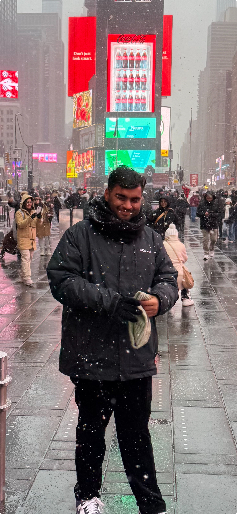

|
Animesh Gupta अनिमेष गुप्ता I am a PhD student at the University of Central Florida, supervised by Dr. Mubarak Shah. My research focuses on Multimodal Learning across images, videos, and 3D data, with a particular interest in developing models for Retrieval tasks. Prior to this, I worked as a Machine Learning Engineer Intern at MVisionAI, where I contributed to medical image registration for radiotherapy planning. I received my Bachelor's degree in Electronics and Computer Science from Thapar University, India. I also completed research internships at UiT - The Arctic University of Norway, where I worked on coreset-based data selection for efficient model training, and at the SketchX Lab, University of Surrey, contributing to sketch-based visual understanding. Email / Google Scholar / Twitter / Github / Resume/CV |
 |
{kind=link}
What's New üì£
Research Interests üß≠I am broadly interested in retrieval tasks using multimodal models that integrate vision, language, and 3D data, with emphasis on modeling efficiency and fine-grained temporal reasoning. |
Publications üìë
|
From Play to Replay: Composed Video Retrieval for Temporally Fine-Grained Videos
Composed Video Retrieval (CoVR) retrieves a target video given a query video and a modification text describing the intended change. Existing CoVR benchmarks emphasize appearance shifts or coarse event changes and therefore do not test the ability to capture subtle, fast-paced temporal differences. We introduce TF-CoVR, the first large-scale benchmark dedicated to temporally fine-grained CoVR. TF-CoVR focuses on gymnastics and diving and provides 180K triplets drawn from FineGym and FineDiving. Previous CoVR benchmarks focusing on temporal aspect, link each query to a single target segment taken from the same video, limiting practical usefulness. In TF-CoVR, we instead construct each
@misc{gupta2025playreplaycomposedvideo,
title={From Play to Replay: Composed Video Retrieval for Temporally Fine-Grained Videos},
author={Animesh Gupta and Jay Parmar and Ishan Rajendrakumar Dave and Mubarak Shah},
year={2025},
eprint={2506.05274},
archivePrefix={arXiv},
primaryClass={cs.CV},
url={https://arxiv.org/abs/2506.05274},
}
|

|
Data-Efficient Training of CNNs and Transformers with Coresets: A Stability Perspective
Coreset selection is among the most effective ways to reduce the training time of CNNs, however, only limited is known on how the resultant models will behave under variations of the coreset size, and choice of datasets and models. Moreover, given the recent paradigm shift towards transformer-based models, it is still an open question how coreset selection would impact their performance. There are several similar intriguing questions that need to be answered for a wide acceptance of coreset selection methods, and this paper attempts to answer some of these. We present a systematic benchmarking setup and perform a rigorous comparison of different coreset selection methods on CNNs and transformers. Our investigation reveals that under certain circumstances, random selection of subsets is more robust and stable when compared with the SOTA selection methods. We demonstrate that the conventional concept of uniform subset sampling across the various classes of the data is not the appropriate choice. Rather samples should be adaptively chosen based on the complexity of the data distribution for each class. Transformers are generally pretrained on large datasets, and we show that for certain target datasets, it helps to keep their performance stable at even very small coreset sizes. We further show that when no pretraining is done or when the pretrained transformer models are used with non-natural images (e.g. medical data), CNNs tend to generalize better than transformers at even very small coreset sizes. Lastly, we demonstrate that in the absence of the right pretraining, CNNs are better at learning the semantic coherence between spatially distant objects within an image, and these tend to outperform transformers at almost all choices of the coreset size.
@article{gupta2023data,
title={Data-Efficient Training of CNNs and Transformers with Coresets},
author={Gupta, Animesh and Hassan, Irtiza and Prasad, Dilip K and Gupta, Deepak K},
year={2023}
}
|

|
Beyond the Imitation Game: Quantifying and extrapolating the capabilities of language models
Language models demonstrate both quantitative improvement and new qualitative capabilities with increasing scale. Despite their potentially transformative impact, these new capabilities are as yet poorly characterized. In order to inform future research, prepare for disruptive new model capabilities, and ameliorate socially harmful effects, it is vital that we understand the present and near-future capabilities and limitations of language models. To address this challenge, we introduce the Beyond the Imitation Game benchmark (BIG-bench). BIG-bench currently consists of 204 tasks, contributed by 450 authors across 132 institutions. Task topics are diverse, drawing problems from linguistics, childhood development, math, common-sense reasoning, biology, physics, social bias, software development, and beyond. BIG-bench focuses on tasks that are believed to be beyond the capabilities of current language models. We evaluate the behavior of OpenAI's GPT models, Google-internal dense transformer architectures, and Switch-style sparse transformers on BIG-bench, across model sizes spanning millions to hundreds of billions of parameters. In addition, a team of human expert raters performed all tasks in order to provide a strong baseline. Findings include: model performance and calibration both improve with scale, but are poor in absolute terms (and when compared with rater performance); performance is remarkably similar across model classes, though with benefits from sparsity; tasks that improve gradually and predictably commonly involve a large knowledge or memorization component, whereas tasks that exhibit "breakthrough" behavior at a critical scale often involve multiple steps or components, or brittle metrics; social bias typically increases with scale in settings with ambiguous context, but this can be improved with prompting.
@article{srivastava2022beyond,
title={Beyond the imitation game: Quantifying and extrapolating the capabilities of language models},
author={Srivastava, Aarohi and Rastogi, Abhinav and Rao, Abhishek and Shoeb, Abu Awal Md and Abid, Abubakar and Fisch, Adam and Brown, Adam R and Santoro, Adam and Gupta, Aditya and Garriga-Alonso, Adri{\`a} and others},
journal={arXiv preprint arXiv:2206.04615},
year={2022}
}
|

|
Adaptive Fine-Grained Sketch-Based Image Retrieval
The recent focus on Fine-Grained Sketch-Based Image Retrieval (FG-SBIR) has shifted towards generalising a model to new categories without any training data from them. In real-world applications, however, a trained FG-SBIR model is often applied to both new categories and different human sketchers, i.e., different drawing styles. Although this complicates the generalisation problem, fortunately, a handful of examples are typically available, enabling the model to adapt to the new category/style. In this paper, we offer a novel perspective -- instead of asking for a model that generalises, we advocate for one that quickly adapts, with just very few samples during testing (in a few-shot manner). To solve this new problem, we introduce a novel model-agnostic meta-learning (MAML) based framework with several key modifications: (1) As a retrieval task with a margin-based contrastive loss, we simplify the MAML training in the inner loop to make it more stable and tractable. (2) The margin in our contrastive loss is also meta-learned with the rest of the model. (3) Three additional regularisation losses are introduced in the outer loop, to make the meta-learned FG-SBIR model more effective for category/style adaptation. Extensive experiments on public datasets suggest a large gain over generalisation and zero-shot based approaches, and a few strong few-shot baselines.
@inproceedings{bhunia2022adaptive,
title={Adaptive fine-grained sketch-based image retrieval},
author={Bhunia, Ayan Kumar and Sain, Aneeshan and Shah, Parth Hiren and Gupta, Animesh and Chowdhury, Pinaki Nath and Xiang, Tao and Song, Yi-Zhe},
booktitle={European Conference on Computer Vision},
pages={163--181},
year={2022},
organization={Springer}
}
|
Research Experience üìö
- Worked on radiotherapy planning using multi-modal image registration (CT and MRI).
- Built an efficient library supporting multiple datasets and algorithms.
- Adapted RWCNet and Transmorph for OASIS and NLST datasets; established AbdomenCTCT baselines.
- Created a benchmarking setup for coreset selection on CNNs and Transformers.
- Showed class-complexity-driven sampling outperforms uniform sampling.
- Work led to a research publication under review.

- Worked on real-time lane detection and vision transformers for DRIVE-Perceptron.
- Focused on optimizing inference and improving real-world performance.
- Worked on fine-grained and category-level sketch-based image retrieval.
- Co-authored ECCV 2022 paper on few-shot FG-SBIR adaptation across categories and styles.


- Worked on road segmentation for autonomous driving in Indian traffic scenarios.
- Trained FCHarDNet on a 10k-image dataset annotated with 34 semantic classes.
|
I borrowed this website layout from here! |